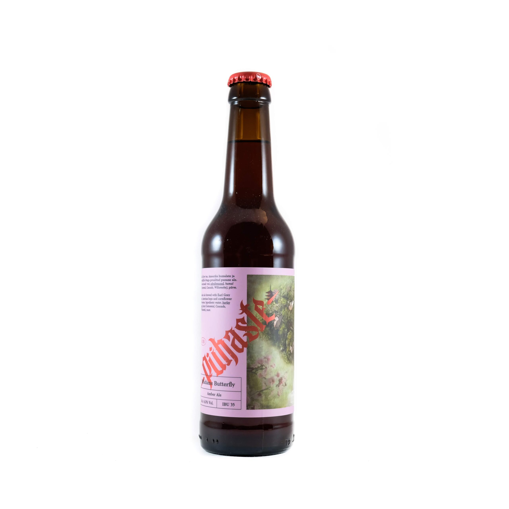

Lehe Päikesetõus Salarannas 6.2% 33cl CAN
Eriti mahlane New England stiilis IPA, milles kontrollitud humalasus
ja mõrudus, aga puuviljased troopilised noodid saavutavad õige
tasakaalu.
4,35 € / tk
Lehe Suur Paks Mastif 9.6% Barrel Aged 33cl
Suur Paks Mastif on Inglise odravein, mille tegelik iseloom sünnib
aastate käigus. Selle õlle puhul on tegemist konjakivaadis küpsenud
eriversiooniga.
7,75 € / tk
Pühaste Poteito Potato 9.5% 33cl
Kartuli ja kardemoniga pruulitud, meeldivalt vürtsine balti porter.
4,10 € / tk

Pühaste Madame Butterfly 6.0% 33cl
Earl Grey tee, Ameerika humalate ja rukkilille õitega pruulitud
punane Ale.
3,08 € / tk
Pühaste / Pipeworks Two Suns 8.0% 33cl CAN
Pipeworks pruulikojaga koostöös pruulitud ülimahlane topelt-IPA.
5,20 € / tk